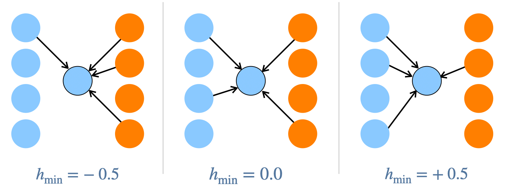

Intro
(BELOW PAR IS GOOD INTRO, BUT MOVE REFERENCES TO A NEW PARAGRAPH AFTER SHORT INTRO, EXPLAINING BRIEFLY HOW NETWORK STRUCTURE AFFECTS THESE FOUR EXAMPLES. GO SHORT WITH SENTENCES AND PARAGRAPHS IN BLOG)
What do innovation in an online puzzle game (Derex and Boyd 2016; Moser and Smaldino 2023), health and weight loss interventions (Centola 2010a, 2011; Zhang and Centola 2019), the diffusion of climate change adaptations (Jones, Ready, and Pisor 2021; Matthew A. Turner et al. 2023), and political polarization (Flache and Macy 2011; Matthew A. Turner and Smaldino 2018) have in common? In all these cases, certain social networks enable more effective development and dissemination of collective intelligence (Centola 2022), potentially enabling more effective cultural adaptation (Galesic et al. 2023), but also sometimes amplifying problematic cultural phenomenon like polarization (Flache and Macy 2011; Matthew A. Turner and Smaldino 2018).
How to quantitatively define network structure
In my current project to understand the diffusion of innovations in minority-majority metapopulations, I use group-level homophily to define social network structure, where homophily is the tendency of individuals from one group to interact more frequently within their own group compared to the out-group. There seems to be no definitive way to quantify homophily, so I chose one that made the most sense to me. There are many types of homophily that may be important, as well, which I review here.
An alternative to homophily for defining social network structure is to focus on the degree to which a social network has a core-periphery structure, hypothesized to be critical for effective climate change adaptation (Jones, Ready, and Pisor 2021) and
Homophily
See (Kossinets and Watts 2009; Centola 2010b, 2011) for some modern model and empirical foundations. Evtushenko and Kleinberg (2021) define first- and second-order homophily of a node: first-order homophily is “individual tendency to link to similar others” and second-order homophily is “aggregate first-order homophily of its neighbors”.
Outline:
- Types of Homophily: global (give empirical examples if possible, e.g. here, (Kossinets and Watts 2009; Centola 2010b, 2011; Golub and Jackson 2012)), second-order ((Evtushenko and Kleinberg 2021)), higher-order([@]; how to measure homophily? There is a difference between different measures of homophily and different forms of homophily: Kossinets & Watts also define homophily arising more from preference and those arising more from circumstance (work/profession, neighborhood, etc.), but of course a certain profession or neighborhood may be correlated with other potential group markers such as race or ethnicity.
Kossinets and Watts (2009)
Centola (2011)
Matthew A. Turner and Smaldino (2018)
- Long-range ties may not be as effective if multiple exposures required (Centola et al. 2007; Centola and Macy 2007), e.g., due to cultural inertia from social or religious norms (Vogt et al. 2016; Efferson, McKay, and Fehr 2020)
Core-periphery
Core-periphery: - Milzman and Moser (2023) - Priebe et al. (2019)
The sophistication of culturally-evolved behaviors and the speed and success of cultural diffusion depends upon group structure in metapopulations of interest, where a metapopulation is a population with distinct groups. Group structure is an aggregate property of metapopulations that specifies the probabilities of a member of one group interacting with members of its own group or another group. My agent-based modeling work so far has operationalized group structure in terms of homophily, which is a measure of the frequency of within- and between-group interactions. An alternative operationalization defines group structure via latent parameters of Bayesian priors in a generative statistical model. These models are complementary, so that possibly fitting latent parameters that determine clustering and core-periphery structure in a stochastic block model have an equivalent representation in terms of asymmetric homophily. This points to an eventual mathematical explanation that could calculate stochastic block parameters directly from a given set of asymmetric homophily values.
- Stochastic block models two-group intro. Using our counting method for calculating homophily in those models.
- Different numbers of connections between groups.
- Fit stochastic block model to generated networks using our code via Cody Ross’s
Homophily could be invisible or not. For instance, experimenters could put people into groups with different homophily values, but it would be invisible without group markers. Could try to have different conditions that reveal group membership to see if knowledge of group membership inhibits diffusion of adaptations. Could probably do different things to increase animosity towards the out-group, but not sure what just yet.
Stochastic block model fits of symmetric homophily-defined networks

SBM parameters of asymmetric homophily-defined networks
We expect that when we create networks based on an agent-centric generative procedure then fit a